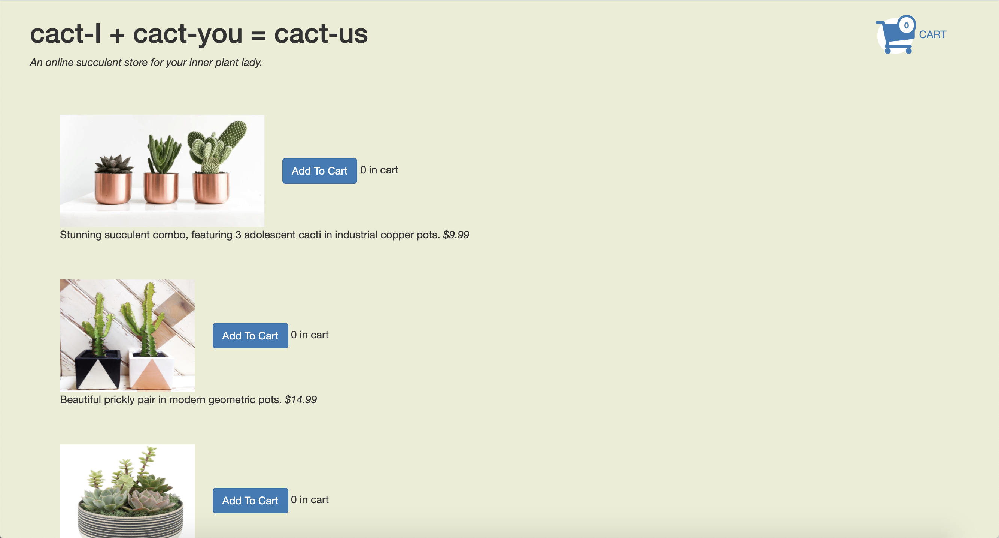

In this project, I conducted A/B testing on a succulent store website, which consists of a listings and a checkout page. I created two different variations of the listings page, A and B. Upon visiting the website, users are shown one of the two versions randomly.
Version A
Version B

I collected data and ran statistical tests for two metrics: Time to Completion and Return Rate.
When a user opens the website, their clicks, click targets, click times, load times, and page versions were recorded. The raw data was then filtered, and parsed into a spreadsheet. For each user, I calculated the time it took to complete the task (fill their cart to at least $150), and observed whether they returned to the website.
Using the collected data for A and B, I ran a two-sample t test to determine whether there was a statistically significant difference in Time to Completion. I also ran a Chi-squared test to determine whether there was a significant difference in the Return Rate.
Time to Completion
Null Hypothesis
There is no significant difference in users’ time to completion between variations A and B.
Alternate Hypothesis
Version B will have a shorter time to completion than version A, due to the differences in layout. In version A, all the items are listed vertically, while the items in Version B are listed in a grid format. The grid format may allow the user to easily see and consider all the choices at once, reducing the time it takes to complete the task.
Return Rate
Null Hypothesis
There is no significant difference in users’ return rates between variations A and B.
Alternate Hypothesis
Version A will have a lower return rate, since the cart is distant and isolated from the rest of the content; while the headers and items are all listed on the left, the cart icon is on the very right. In version B, the horizontal listings draw the scan pattern from left to right, leading users to actively look at the cart on the right end, and to click on the cart and then return to the listings before completing the task. This results in a higher return rate for B.
Statistical Analysis
As it turns out, the results were not statistically significant. For both metrics the p-value was above 0.05 (for a 95% confidence level), so we do not have enough evidence to reject the null hypothesis, and we cannot conclusively state that one design performed better or worse than the other.
This may have been because the variations did not make a significant difference for users' experience, or it may have been because the sample size (which was only 23 users) was not large enough for meaningful data. Either way, perhaps continuously collecting more data over time, on a larger pool of users, will provide more statistically significant results with more meaningful conclusions in the future.